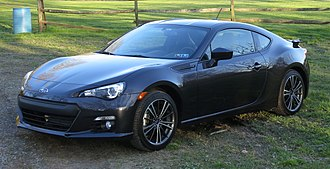
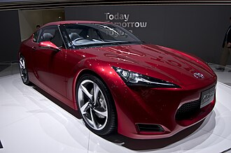

Back to main

Subaru BRZ — компактный заднеприводный спорткар в кузове двухдверного купе, разработанное и производимое совместно компаниями Subaru и Toyota, официально представлено в декабре 2011 года на Токийском автосалоне. BRZ — это аббревиатура Boxer, Rear Wheel Drive, Zenith. Модель продаётся под тремя разными брендами: Toyota (Toyota 86 в Японии, Австралии, Северной Америке и Северной Африке, Toyota GT-86 в Европе, Toyota FT-86 в Никарагуа и Ямайке), Subaru (Subaru BRZ) и Scion (Scion FR-S). Автомобиль официально продавался в России до 2015 года.
Содержание
Развитие кода 086A этого автомобиля и его основного названия 86 (произносится как восемь-шесть или хати-року (яп. ハチロク), но чаще произносится как восемьдесят шесть) или GT86, отсылает к историческим спортивным купе и хетчбэкам Toyota с передним расположением двигателя и задним приводом, а именно:
Toyota также ссылается на свой первый спортивный автомобиль, Sports 800, учитывая, что оба этих автомобиля имеют оппозитный двигатель, как широко используемый партнёром по проекту и производителем 86, Subaru.
Первоначальный макет и элементы дизайна для 86 были представлены компанией Toyota под своей «FT» (англ. Future Toyota) номенклатурой концепт-каров. Первой была представлена Toyota FT-HS на Детройтском автосалоне в 2007 году. Автомобиль имел переднее расположение двигателя, задний привод и был оснащён двигателем V6 и электродвигателем. В 2008 году Toyota купила 16,5 % Fuji Heavy Industries, которая включает в себя автомобильный бренд Subaru. Toyota, во главе с руководителем проекта Тецуя Тада, предложили Subaru принять участие в своём новом проекте спортивного купе, разрабатывая совместно новый оппозитный двигатель D-4S, однако, от него было решено отказаться, поскольку конструкция вступает в противоречие с репутацией Subaru, выпускающей мощные полноприводные автомобили. Это обстоятельство остановило проект на шесть месяцев до того, как Toyota пригласила журналистов и инженеров Subaru протестировать опытный образец. После испытаний, Subaru решила более активно участвовать в разработке.

Таким образом, новое сотрудничество создало новый концепт-кар, FT-86, представленный на Токийском автосалоне в октябре 2009 года. Будучи компактней, чем FT-HS, дизайн FT-86 был усовершенствован дизайн-студией ED2 компании Toyota, в то время как гибридная силовая установка V6 была заменена на новый оппозит D-4S. Subaru представила шасси и коробку передач, адаптированную от своей Impreza. Концепт был окрашен в цвет Shoujyouhi Red, в названии которого сообщалось, что он основываются заде японского макака.
В 2010 году на Токийском автосалоне, компания Toyota запустила свою спортивную линию G Sports, вместе с концептом FT-86 G Sports. Он получил карбоновые панели от G Sports, вентилируемый капот, антикрыло, 19-дюймовые колеса, гоночные сидения Recaro и внутренний каркас. Двигатель D-4S также получил турбонаддув.
В 2011 году Toyota и Subaru представили пять предпроизводственных концептов, чтобы показать их прогресс с проектом. Первый, известный как FT-86 II Concept, был представлен на Женевском автосалоне в марте 2011 года. Изысканный дизайн от ED2 первоначального FT-86, получил также новые передние и задние панели, незначительно увеличившие габариты концепта.[12] На том же автосалоне Subaru также представила прозрачный силуэт автомобиля с новым оппозитным двигателем D-4S, отображаемый как "Архитектура оппозитного спортивного автомобиля " (англ. Boxer Sports Car Architecture).
Scion в апреле 2011 года на Нью-Йоркском автосалоне представил концепт спортивного купе FR-S Sports Coupé Concept.[14] Ещё один полу-прозрачный концепт Subaru, известный как BRZ Prologue, был показан на Франкфуртском автосалоне в сентябре,[15] а в ноябре на автосалоне в Лос-Анджелесе концепт BRZ Concept STi, в первая полноценная модель Subaru-версии 86 с участием Subaru Tecnica International (STI).